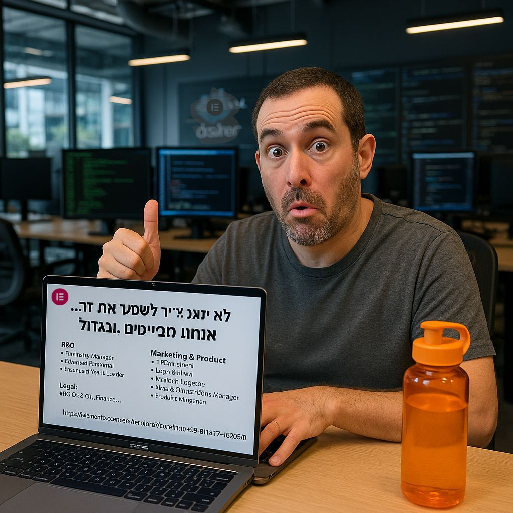

פינת ה: ״מחפשים משרה חדשה?״ 🎯
פורסם במקור ב LinkedIn
פינת ה: ״מחפשים משרה חדשה?״ 🎯
מחפשים או סתם בודקים “מה יש בשוק” בשביל חבר? 😉
אז ככה - באלמנטור אנחנו מגייסים לא מעט, ויש מצב טוב שאחת המשרות אצלנו תגרום לכם להגיד “הממ… מעניין 👀”.
🚀 הנה טעימה מהתפריט:
R&D
👨💻 Engineering Manager | Front-End Architect | Full-Stack Team Leader | ועוד גוד סטאף
Product & Marketing
🧠 Product Manager - AI | Product Marketing Director | Content Lead | Affiliate Manager
(כן, יש תפקידים שאפילו נשמעים מגניב)
Legal, BI, CX, Finance...
⚖️ Legal Counsel | 📊 Head of BI | 💳 Payment Manager | 💡 CX Engineer ועוד
בקיצור - אם אתם חכמים, יצירתיים, אוהבים לבנות דברים שמשפיעים על מיליונים (באמת מיליונים) אז כנסו ללינק הזה ותראו אם משהו מדבר אליכם:
👈 https://lnkd.in/duCr56Pq
אם לא - מוזמנים לתייג או להעביר הלאה לחבר/ה שבדיוק חזרו מהמזרח וחושבים מה לעשות עכשיו 😉
#WeAreHiring #TechJobs #Elementor #LifeAtElementor
